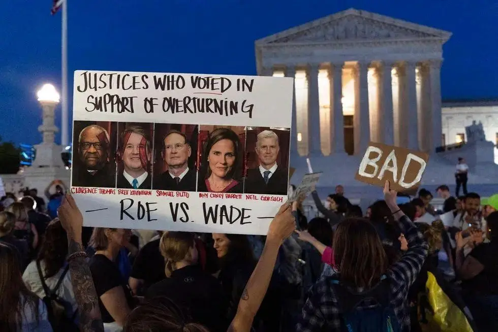
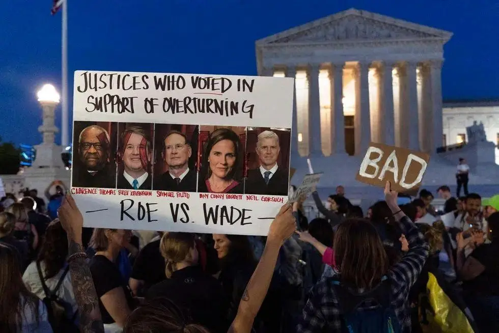

5月4日-“巅峰使命2022”珠峰科考成功登顶
“巅峰使命”珠峰科考是第二次青藏科考队联合西藏登山队实施的活动。
2022年4月28日，“巅峰使命”珠峰科考活动全面启动。5月3日，13名科考队员出发前往海拔8300米的突击营地，将在4日向世界之巅发起冲击。5月3日19时左右，“巅峰使命”珠峰科考登顶13名科考队员已抵达8300米突击营地。
2022年5月4日，“巅峰使命2022”珠峰科考成功登顶8848.86米；成功架设世界海拔最高的自动气象站。5月5日，珠峰科考队员顺利返回大本营。
2022年5月，中国自主研发的“极目一号”Ⅲ型浮空艇已成功完成10次升空大气科学观测，最高升空至9050米，超过珠峰，创造了浮空艇原位大气科学观测海拔最高的世界纪录
“巅峰使命”珠峰科考
| 中文名 | “巅峰使命”珠峰科考 | 队 长 | 姚檀栋 |
| 启动时间 | 2022年4月28日 | 登顶高度 | 8848.86米 |
项目背景
青藏高原是世界屋脊、亚洲水塔，是地球第三极。我国自20世纪50年代起开展了超过6次的珠峰科考活动，包括70年代我国开展了第一次大规模的青藏高原综合科学考察研究。“巅峰使命”珠峰科考2022年4月28日全面启动，共有5个科考分队16支科考小组270多名科考队员参加，这是2017年第二次青藏科考以来学科覆盖面最广、参加科考队员最多、采用的仪器设备最先进的综合性科考，是人类在珠峰地区开展极高海拔综合科学考察研究的一次壮举。
研究成果
2022年7月12日，巅峰使命-珠峰科考学术交流会议召开，我国2022年4月开启“巅峰使命2022——珠峰极高海拔地区综合科学考察研究”，聚焦珠峰地区的环境变化，从大气、水、生态、地表过程等方面进行了全方位的考察，目前该科考活动已取得7个方面的研究成果。
考察队已取得的7大研究成果包括：在揭示珠峰地区西风-季风协同作用及影响方面，监测并发现了珠峰地区风速的垂直分布规律；在巅峰海拔的强烈升温方面，监测发现了珠峰地区4000~8000米海拔高度的温度变化规律和特征；在巅峰海拔的冰雪融化方面，考察队采用剖面测量方式，沿裸露基岩处开始测量，逐步测量到珠峰冰雪顶部，该方法获得了高质量的冰雪厚度渐变剖面，相比过去顶部单点测方法，数据更容易进行解读；在珠峰地区水汽和温室气体科考方面，考察队利用“极目一号”Ⅲ型浮空艇观测平台等各类高新技术平台，实现了地表至海拔9050米高空水汽稳定同位素、黑碳、粉尘、甲烷、二氧化碳和风温湿压同时实时观测，并取得了拉萨-珠峰地区的甲烷浓度观测初步结果；考察队发现了珠峰地区的强大气氧化性过程，首次采用多种先进技术获得大量的大气臭氧浓度数据，证实了珠峰地区臭氧浓度高，进一步分析有望揭示青藏高原高臭氧浓度自平流层的垂直输送，或西风带的水平输送，对高原大气氧化性起着决定作用；在人体的高山生理适应研究方面，考察队观测到珠峰地区人体生理的特殊反应：急进高原后，会出现心率升高，心率变异性下降；在气候变化下珠峰地区土地覆被变化方面，考察队观测到珠峰地区变绿的生态过程，其全域的植被覆盖指数呈增加态势。
5月4日-罗诉韦德案
1972年，得克萨斯州两个年轻的女权律师莎拉·威丁顿和林达·考费试图挑战当时的堕胎政策。她们选中了一名希望堕胎的21岁女子，化名为简·罗（Jane Roe），她们将达拉斯地方检察官亨利·韦德（Henry Wade）告上法庭，要求得克萨斯州取消堕胎禁令，这就是“罗诉韦德案” 名称的由来。
几经周折，1973年1月22日，美国联邦最高法院最后以7比2的表决，确认妇女决定是否继续怀孕的权利受到宪法上个人自主权和隐私权规定的保护，这等于承认美国堕胎的合法化，其影响在美国极为深远。
2022年6月24日，美国最高法院正式推翻“罗诉韦德案”有关堕胎权的裁决，结束了近50年来对堕胎的宪法保护。
推翻裁决
2022年5月4日，有消息称美国最高法院或将推翻罗诉韦德案裁决。
2022年6月9日，据美国有线电视新闻网（CNN）报道，美国总统拜登受访时表示：若最高法推翻罗诉韦德案裁决，将考虑采取行政命令。
2022年6月24日，美国最高法院裁定，取消宪法规定的堕胎权，推翻1973年“罗诉韦德案”的裁决，并将堕胎的合法性问题留给了各州应对。美国亚利桑那州和华盛顿特区出现大量抗议者，抗议者焚烧美国国旗来表达不满情绪。
联合国和世界各国领导人批评该决定，谴责它是一种倒退，将会导致数百万女性受害。联合国人权事务高级专员米歇尔·巴切莱特说，法院推翻“罗伊诉韦德案”的裁决“是美国保护性健康和生殖健康及权利五十年后的一次严重倒退”。
2022年6月26日消息，据美媒报道，美国总统拜登当天发表公开讲话，谴责最高法院推翻“罗诉韦德案”的决定，称最高法院犯了“悲剧性错误”，让美国倒退150年，剥夺了已经被美国承认并执行50年的基本宪法权利。当地时间6月26日，据美国《国会山报》报道，美国加州洛杉矶抗议美国最高法院取消堕胎权判决的示威活动中，两名抗议人员因涉嫌拒捕、袭击警察等罪名被逮捕
2022年7月2日，据美国《国会山报》报道，在美国联邦最高法院上周推翻“罗诉韦德案”的判决后，俄亥俄州的一名10岁女孩在该州被拒绝堕胎
当地时间2022年7月12日，美国国会参议院司法委员会举行听证会，讨论“罗诉韦德案”裁决被推翻后的生殖保健法律。多位代表在听证会上表示，联邦最高法院推翻“罗诉韦德案”裁决的决定正在造成医疗保健的“混乱”，一些州寻求堕胎的人数激增，而医生不确定这些人是否有合法权利。还有参议员表示，相关裁决不仅限制了堕胎护理服务，还限制了在禁止堕胎的州处理流产或异位妊娠等相关问题。
当地时间2022年7月28日公布的一项研究显示，自美国最高法院推翻罗诉韦德案的一个月以来，美国至少有43家诊所已经停止提供堕胎服务。
当地时间2022年8月23日晚间，美国得克萨斯州联邦法官詹姆斯·亨德里克斯（James Hendrix）发布裁决，停止了卫生与公众服务部（HHS）上个月发布的紧急堕胎指导意见的实施，即医生需在紧急医疗情况下提供堕胎服务。当地时间8月24日，美国白宫发言人卡琳·让-皮埃尔发表声明，称该法官停止紧急堕胎指导意见实施的裁决是不顾女性生命安全和健康、剥夺女性权益的行为。声明称，拜登政府将继续为保护女性生殖健康权益斗争，呼吁国会通过立法，恢复对“罗诉韦德案”的保护。最高法院推翻“罗诉韦德案”后，得州开始实施堕胎禁令的“触发式法律”。亨德里克斯的这一裁决将阻止得州境内女性在遭遇紧急医疗情况时进行堕胎手术或者相关医疗服务。
 
